area_1_1아트 7지점(폐허 수선 1 · 신규 생성 1 · 택1 5) ↔ 시트 area_id=1 7건(수선 2 · 택1 5) · 종류 다른 순번 07/7 · 100%
| 순번 | 아트 (AreaCourtyard.prefab) | 시트 (main_task 라이브) | 판정 | ||||
|---|---|---|---|---|---|---|---|
| 지점 | 종류 | 그림 | key | 종류 | sprite_key | ||
| 1 | task_deco_1 | 폐허→수선 | 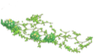 | 70001 | 수선 | deco/area1/obj_01 | 일치 |
| 2 | task_deco_2 | 신규 생성 | 없음 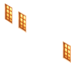 | 70002 | 수선 | deco/area1/obj_02 | 일치 |
| 3 | task_deco_3 | 택1 | 70003 | 택1 | — | 일치 | |
| 4 | task_deco_4 | 택1 | 70005 | 택1 | — | 일치 | |
| 5 | task_deco_5 | 택1 | 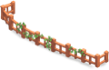 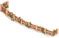 | 70007 | 택1 | — | 일치 |
| 6 | task_deco_6 | 택1 | 70189 | 택1 | — | 일치 | |
| 7 | task_deco_7 | 택1 | 70190 | 택1 | — | 일치 | |
1_1 은 1 바로 뒤), 오른쪽은 시트 수선·택1 순서(story 제외)를 같은 순번에 놓은 것이라 붉은 행은 그 순번에서 두 쪽의 종류가 다릅니다 — 한 곳이 어긋나면 뒤 순번이 줄줄이 밀려 붉어지므로 첫 붉은 행부터 봅니다.
area_1_2아트 15지점(폐허 수선 4 · 신규 생성 0 · 택1 11) ↔ 시트 area_id=2 15건(수선 4 · 택1 11) · 종류 다른 순번 213/15 · 87%NEW 11행
| 순번 | 아트 (AreaCourtyard.prefab) | 시트 (main_task 라이브) | 판정 | ||||
|---|---|---|---|---|---|---|---|
| 지점 | 종류 | 그림 | key | 종류 | sprite_key | ||
| 1 | task_deco_1 | 폐허→수선 | 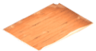 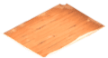 | 70008 | 수선 | deco/area2/obj_01 | 일치 |
| 2 | task_deco_2 | 폐허→수선 |  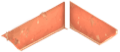 | 70009 | 수선 | deco/area2/obj_02 | 일치 |
| 3NEW | task_deco_3 | 택1 | 70011 | 택1 | — | 일치 | |
| 4NEW | task_deco_4 | 폐허→수선 |  | 70012 | 수선 | deco/area2/obj_03 | 일치 |
| 5 | task_deco_5 | 택1 | 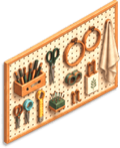 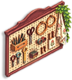 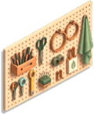 | 70013 | 택1 | — | 일치 |
| 6 | task_deco_6 | 택1 | 70014 | 택1 | — | 일치 | |
| 7NEW | task_deco_7 | 택1 | 70015 | 수선 | deco/area2/obj_04 | 종류 다름 | |
| 8NEW | task_deco_8 | 폐허→수선 |  | 70016 | 택1 | — | 종류 다름 |
| 9NEW | task_deco_9 | 택1 | 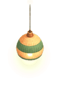 | 70017 | 택1 | — | 일치 |
| 10NEW | task_deco_10 | 택1 | 70018 | 택1 | — | 일치 | |
| 11NEW | task_deco_11 | 택1 | 70019 | 택1 | — | 일치 | |
| 12NEW | task_deco_12 | 택1 | 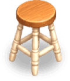 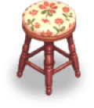 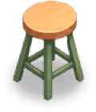 | 70020 | 택1 | — | 일치 |
| 13NEW | task_deco_13 | 택1 | 70021 | 택1 | — | 일치 | |
| 14NEW | task_deco_14 | 택1 | 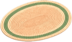 | 70022 | 택1 | — | 일치 |
| 15NEW | task_deco_15 | 택1 | 70023 | 택1 | — | 일치 | |
1_1 은 1 바로 뒤), 오른쪽은 시트 수선·택1 순서(story 제외)를 같은 순번에 놓은 것이라 붉은 행은 그 순번에서 두 쪽의 종류가 다릅니다 — 한 곳이 어긋나면 뒤 순번이 줄줄이 밀려 붉어지므로 첫 붉은 행부터 봅니다.
area_1_3아트 20지점(폐허 수선 5 · 신규 생성 2 · 택1 13) ↔ 시트 area_id=3 20건(수선 7 · 택1 13) · 종류 다른 순번 614/20 · 70%NEW 18행
| 순번 | 아트 (AreaCourtyard.prefab) | 시트 (main_task 라이브) | 판정 | ||||
|---|---|---|---|---|---|---|---|
| 지점 | 종류 | 그림 | key | 종류 | sprite_key | ||
| 1 | task_deco_1 | 폐허→수선 | 70024 | 수선 | deco/area3/obj_01 | 일치 | |
| 2NEW | task_deco_1_1 | 폐허→수선 | 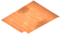  | 70025 | 수선 | deco/area3/obj_02 | 일치 |
| 3NEW | task_deco_2 | 폐허→수선 |  | 70026 | 수선 | deco/area3/obj_03 | 일치 |
| 4NEW | task_deco_3 | 폐허→수선 |  | 70027 | 수선 | deco/area3/obj_04 | 일치 |
| 5NEW | task_deco_4 | 택1 | 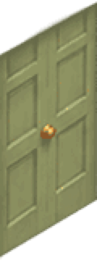 | 70029 | 택1 | — | 일치 |
| 6NEW | task_deco_5 | 택1 | 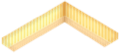 | 70030 | 수선 | deco/area3/obj_05 | 종류 다름 |
| 7 | task_deco_6 | 폐허→수선 |  | 70031 | 택1 | — | 종류 다름 |
| 8NEW | task_deco_7 | 택1 | 70193 | 택1 | — | 일치 | |
| 9NEW | task_deco_8 | 택1 | 70194 | 택1 | — | 일치 | |
| 10NEW | task_deco_9 | 택1 | 70033 | 택1 | — | 일치 | |
| 11NEW | task_deco_10 | 택1 | 70035 | 수선 | deco/area3/obj_06 | 종류 다름 | |
| 12NEW | task_deco_11 | 신규 생성 | 없음 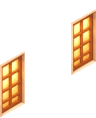 | 70036 | 택1 | — | 종류 다름 |
| 13NEW | task_deco_12 | 택1 | 70039 | 택1 | — | 일치 | |
| 14NEW | task_deco_13 | 택1 | 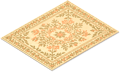 | 70040 | 택1 | — | 일치 |
| 15NEW | task_deco_14 | 택1 | 70199 | 택1 | — | 일치 | |
| 16NEW | task_deco_15 | 택1 | 70041 | 택1 | — | 일치 | |
| 17NEW | task_deco_16 | 택1 | 70043 | 수선 | deco/area3/obj_07 | 종류 다름 | |
| 18NEW | task_deco_17 | 신규 생성 | 없음 | 70044 | 택1 | — | 종류 다름 |
| 19NEW | task_deco_18 | 택1 | 70046 | 택1 | — | 일치 | |
| 20NEW | task_deco_19 | 택1 | 70047 | 택1 | — | 일치 | |
1_1 은 1 바로 뒤), 오른쪽은 시트 수선·택1 순서(story 제외)를 같은 순번에 놓은 것이라 붉은 행은 그 순번에서 두 쪽의 종류가 다릅니다 — 한 곳이 어긋나면 뒤 순번이 줄줄이 밀려 붉어지므로 첫 붉은 행부터 봅니다.
area_1_4아트 17지점(폐허 수선 4 · 신규 생성 2 · 택1 11) ↔ 시트 area_id=4 17건(수선 6 · 택1 11) · 종류 다른 순번 017/17 · 100%NEW 16행
| 순번 | 아트 (AreaCourtyard.prefab) | 시트 (main_task 라이브) | 판정 | ||||
|---|---|---|---|---|---|---|---|
| 지점 | 종류 | 그림 | key | 종류 | sprite_key | ||
| 1NEW | task_deco_1 | 폐허→수선 |  | 70050 | 수선 | deco/area4/obj_01 | 일치 |
| 2NEW | task_deco_2 | 폐허→수선 |  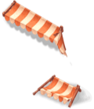 | 70052 | 수선 | deco/area4/obj_02 | 일치 |
| 3NEW | task_deco_3 | 폐허→수선 | 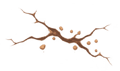 | 70053 | 수선 | deco/area4/obj_03 | 일치 |
| 4NEW | task_deco_4 | 택1 | 70056 | 택1 | — | 일치 | |
| 5NEW | task_deco_5 | 신규 생성 | 없음 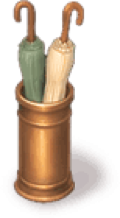 | 70057 | 수선 | deco/area4/obj_04 | 일치 |
| 6NEW | task_deco_6 | 신규 생성 | 없음 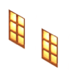 | 70058 | 수선 | deco/area4/obj_05 | 일치 |
| 7NEW | task_deco_7 | 택1 | 70060 | 택1 | — | 일치 | |
| 8NEW | task_deco_8 | 택1 | 70062 | 택1 | — | 일치 | |
| 9NEW | task_deco_9 | 택1 | 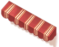 | 70063 | 택1 | — | 일치 |
| 10NEW | task_deco_10 | 택1 | 70065 | 택1 | — | 일치 | |
| 11NEW | task_deco_11 | 택1 | 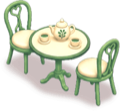  | 70068 | 택1 | — | 일치 |
| 12NEW | task_deco_12 | 택1 |   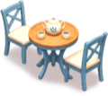 | 70072 | 택1 | — | 일치 |
| 13NEW | task_deco_13 | 폐허→수선 | 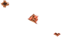  | 70073 | 수선 | deco/area4/obj_06 | 일치 |
| 14NEW | task_deco_14 | 택1 | 70076 | 택1 | — | 일치 | |
| 15NEW | task_deco_15 | 택1 | 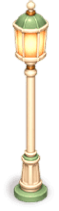   | 70080 | 택1 | — | 일치 |
| 16 | task_deco_16 | 택1 | 70082 | 택1 | — | 일치 | |
| 17NEW | task_deco_17 | 택1 | 70085 | 택1 | — | 일치 | |
1_1 은 1 바로 뒤), 오른쪽은 시트 수선·택1 순서(story 제외)를 같은 순번에 놓은 것이라 붉은 행은 그 순번에서 두 쪽의 종류가 다릅니다 — 한 곳이 어긋나면 뒤 순번이 줄줄이 밀려 붉어지므로 첫 붉은 행부터 봅니다.
area_1_5아트 23지점(폐허 수선 4 · 신규 생성 1 · 택1 18) ↔ 시트 area_id=5 23건(수선 5 · 택1 18) · 종류 다른 순번 023/23 · 100%NEW 23행
| 순번 | 아트 (AreaCourtyard.prefab) | 시트 (main_task 라이브) | 판정 | ||||
|---|---|---|---|---|---|---|---|
| 지점 | 종류 | 그림 | key | 종류 | sprite_key | ||
| 1NEW | task_deco_1 | 폐허→수선 |  | 70089 | 수선 | deco/area5/obj_01 | 일치 |
| 2NEW | task_deco_2 | 폐허→수선 |  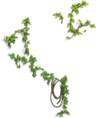 | 70090 | 수선 | deco/area5/obj_02 | 일치 |
| 3NEW | task_deco_3 | 폐허→수선 | 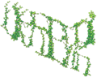  | 70091 | 수선 | deco/area5/obj_03 | 일치 |
| 4NEW | task_deco_4 | 폐허→수선 |  | 70094 | 수선 | deco/area5/obj_04 | 일치 |
| 5NEW | task_deco_5 | 택1 | 70096 | 택1 | — | 일치 | |
| 6NEW | task_deco_6 | 택1 | 70207 | 택1 | — | 일치 | |
| 7NEW | task_deco_7 | 택1 |   | 70099 | 택1 | — | 일치 |
| 8NEW | task_deco_8 | 택1 |  | 70102 | 택1 | — | 일치 |
| 9NEW | task_deco_9 | 택1 | 70105 | 택1 | — | 일치 | |
| 10NEW | task_deco_10 | 택1 | 70108 | 택1 | — | 일치 | |
| 11NEW | task_deco_11 | 택1 | 70109 | 택1 | — | 일치 | |
| 12NEW | task_deco_12 | 택1 | 70112 | 택1 | — | 일치 | |
| 13NEW | task_deco_13 | 택1 | 70113 | 택1 | — | 일치 | |
| 14NEW | task_deco_14 | 택1 |  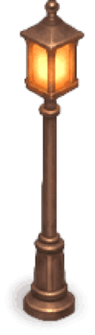 | 70117 | 택1 | — | 일치 |
| 15NEW | task_deco_15 | 택1 | 70118 | 택1 | — | 일치 | |
| 16NEW | task_deco_16 | 택1 |  | 70201 | 택1 | — | 일치 |
| 17NEW | task_deco_17 | 택1 |   | 70214 | 택1 | — | 일치 |
| 18NEW | task_deco_18 | 택1 | 70121 | 택1 | — | 일치 | |
| 19NEW | task_deco_19 | 택1 | 70122 | 택1 | — | 일치 | |
| 20NEW | task_deco_20 | 신규 생성 | 없음 | 70125 | 수선 | deco/area5/obj_05 | 일치 |
| 21NEW | task_deco_21 | 택1 | 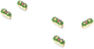 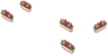 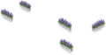 | 70127 | 택1 | — | 일치 |
| 22NEW | task_deco_22 | 택1 | 70128 | 택1 | — | 일치 | |
| 23NEW | task_deco_23 | 택1 | 70218 | 택1 | — | 일치 | |
1_1 은 1 바로 뒤), 오른쪽은 시트 수선·택1 순서(story 제외)를 같은 순번에 놓은 것이라 붉은 행은 그 순번에서 두 쪽의 종류가 다릅니다 — 한 곳이 어긋나면 뒤 순번이 줄줄이 밀려 붉어지므로 첫 붉은 행부터 봅니다.
area_2_6아트 26지점(폐허 수선 6 · 신규 생성 2 · 택1 18) ↔ 시트 area_id=6 27건(수선 16 · 택1 11) · 종류 다른 순번 1016/27 · 59%
| 순번 | 아트 (AreaStation.prefab) | 시트 (main_task 라이브) | 판정 | ||||
|---|---|---|---|---|---|---|---|
| 지점 | 종류 | 그림 | key | 종류 | sprite_key | ||
| 1 | task_deco_1 | 폐허→수선 |  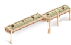 | 70129 | 수선 | deco/area6/obj_01 | 일치 |
| 2 | task_deco_2 | 폐허→수선 |  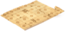 | 70131 | 수선 | deco/area6/obj_02 | 일치 |
| 3 | task_deco_3 | 폐허→수선 | 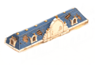  | 70132 | 수선 | deco/area6/obj_03 | 일치 |
| 4 | task_deco_4 | 택1 | 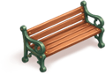 | 70134 | 택1 | — | 일치 |
| 5 | task_deco_5 | 신규 생성 | 없음 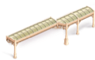 | 70135 | 수선 | deco/area6/obj_04 | 일치 |
| 6 | task_deco_6 | 신규 생성 | 없음 | 70137 | 택1 | — | 종류 다름 |
| 7 | task_deco_7 | 폐허→수선 |  | 70138 | 수선 | deco/area6/obj_05 | 일치 |
| 8 | task_deco_8 | 폐허→수선 | 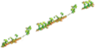  | 70139 | 수선 | deco/area6/obj_06 | 일치 |
| 9 | task_deco_9 | 택1 | 70140 | 택1 | — | 일치 | |
| 10 | task_deco_10 | 폐허→수선 | 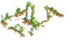  | 70141 | 수선 | deco/area6/obj_07 | 일치 |
| 11 | task_deco_11 | 택1 | 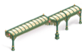 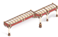 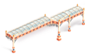 | 70143 | 택1 | — | 일치 |
| 12 | task_deco_12 | 택1 | 70144 | 수선 | deco/area6/obj_08 | 종류 다름 | |
| 13 | task_deco_13 | 택1 | 70146 | 수선 | deco/area6/obj_09 | 종류 다름 | |
| 14 | task_deco_14 | 택1 | 70147 | 택1 | — | 일치 | |
| 15 | task_deco_15 | 택1 | 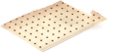 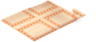 | 70149 | 수선 | deco/area6/obj_10 | 종류 다름 |
| 16 | task_deco_16 | 택1 | 70150 | 수선 | deco/area6/obj_11 | 종류 다름 | |
| 17 | task_deco_17 | 택1 | 70152 | 택1 | — | 일치 | |
| 18 | task_deco_18 | 택1 | 70153 | 수선 | deco/area6/obj_12 | 종류 다름 | |
| 19 | task_deco_19 | 택1 | 70155 | 택1 | — | 일치 | |
| 20 | task_deco_20 | 택1 | 70156 | 수선 | deco/area6/obj_13 | 종류 다름 | |
| 21 | task_deco_21 | 택1 | 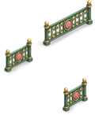 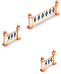 | 70158 | 수선 | deco/area6/obj_14 | 종류 다름 |
| 22 | task_deco_22 | 택1 | 70160 | 택1 | — | 일치 | |
| 23 | task_deco_23 | 택1 | 70161 | 수선 | deco/area6/obj_15 | 종류 다름 | |
| 24 | task_deco_24 | 택1 | 70163 | 택1 | — | 일치 | |
| 25 | task_deco_25 | 택1 | 70164 | 수선 | deco/area6/obj_16 | 종류 다름 | |
| 26 | task_deco_26 | 택1 | 70166 | 택1 | — | 일치 | |
| 27 | 아트 지점 없음 | 70167 | 택1 | — | 아트 없음 | ||
1_1 은 1 바로 뒤), 오른쪽은 시트 수선·택1 순서(story 제외)를 같은 순번에 놓은 것이라 붉은 행은 그 순번에서 두 쪽의 종류가 다릅니다 — 한 곳이 어긋나면 뒤 순번이 줄줄이 밀려 붉어지므로 첫 붉은 행부터 봅니다.
꾸미기 터치영역 겹침끝난 택1 꾸미기 -개를 탭했을 때 누가 받나 · 방식 4가지 + 확장 1가지 비교
끝난 택1 꾸미기를 탭하면 디자인 바꾸기가 뜹니다. 터치영역이 이미지(스프라이트) 사각형이라, 같은 자리에 터치영역이 여럿 겹치면 맨 위 하나만 탭을 받고 아래 꾸미기는 못 받습니다. 지도의 색은 그 칸을 받는 꾸미기, 빨강은 둘 이상 겹친 칸입니다. 지도를 클릭하면 그 자리를 탭할 때 받는 쪽과 가려지는 쪽이 순서대로 나옵니다.
아래 비교표는 터치영역을 만드는 방식 4가지를 같은 기준(변형, 구역)으로 잰 것입니다. 행을 누르면 지도가 그 방식으로 바뀝니다. 마지막 4+ 행은 알파 픽셀에 막힌 구멍 메움과 부풀리기(px 선택)를 더한 것으로, 누를 때 지도 데이터를 불러옵니다. 5% 이하 = 자기 터치영역 중 5% 이하만 탭을 받는 꾸미기 수, 가려짐 = 일부라도 다른 꾸미기에 덮이는 수입니다.
| 방식 | 5% 이하 | 50% 미만 | 가려짐 | 터치면적 합(만 px2) |
|---|
여기를 탭하면 (클릭한 지점)
못 받는 꾸미기 순위 (받는 면적 % 낮은 순)
| 꾸미기 | 받는 % | 주로 가리는 쪽 |
|---|
구멍 메우기 + 부풀리기 알파 픽셀 방식에서 뚫린 그림이 안 눌리는 문제 · 프레임 -장
알파 픽셀 방식은 투명한 곳이 눌리지 않아서, 사다리·창살·아치처럼 가운데가 뚫린 그림은 구멍 자리를 누르면 아래 꾸미기가 받습니다. 그래서 두 가지를 더해 봅니다. 지도에서 겹침과 함께 보려면 위 비교표의 4+ 행을 누르세요. 막힌 구멍 메우기 = 그림 바깥에서 닿을 수 없는 투명 구멍을 터치영역에 포함시킵니다. 부풀리기 = 윤곽을 정해진 px 만큼 바깥으로 키웁니다(손가락 폭). 둘 다 베이크 단계에서 계산하므로 클라이언트 판정 코드는 그대로입니다.
구멍이 옆이나 위로 터진 모양(전구 줄, 울타리 등)은 메우기로 막히지 않고, 부풀리기도 큰 빈칸은 못 메웁니다. 아래 표에서 보듯 부풀릴수록 터치영역 겹침이 다시 늘어납니다.
| 방식 | 5% 이하 | 50% 미만 | 가려짐 | 터치면적 합(만 px2) | 겹침 면적(만 px2) |
|---|
위 비교표와 같은 기준(월드 4px 격자, 끝난 모습)으로 방식만 바꿔 다시 잰 값입니다. 겹침 면적 = 둘 이상의 꾸미기 터치영역이 겹치는 곳의 넓이로, 작을수록 탭이 덜 가려집니다. 프레임 카드는 막힌 구멍이 있는 프레임만 보여 줍니다(전체 프레임의 일부).
area_courtyard 번들 프리팹에서 뽑아 4px 격자로 계산한 근사입니다. 위아래 순서는 에리어 프리팹 트리 순서(나중 = 위)로 잡은 추정이고 엔진의 실제 터치 우선순위는 실기에서 확인 전입니다. 알파 임계값 32와 격자 4px는 임의로 잡은 값이며, 슬라이스/타일 스프라이트는 사각형으로 계산했습니다. zIndex 직접 지정, 카메라 드래그/핀치는 반영하지 않았습니다. 같은 그림(플레이스홀더)이라 터치영역이 안 붙는 꾸미기는 현재 -건입니다. 성능 수치는 노드 87개를 우선순위 순으로 훑는 마이크로 벤치(엔진 밖)이며 구현 뒤 실기 실측이 필요합니다.